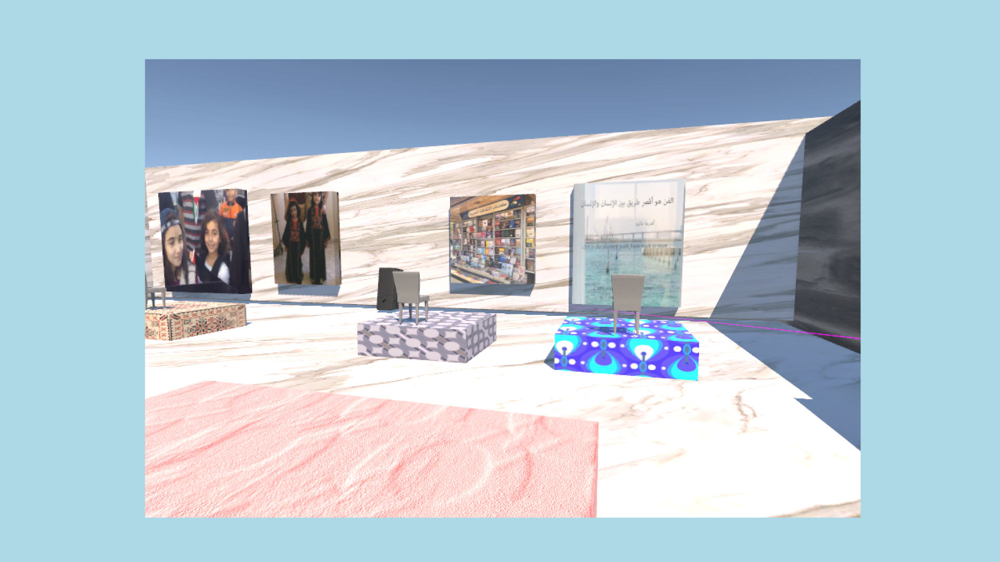
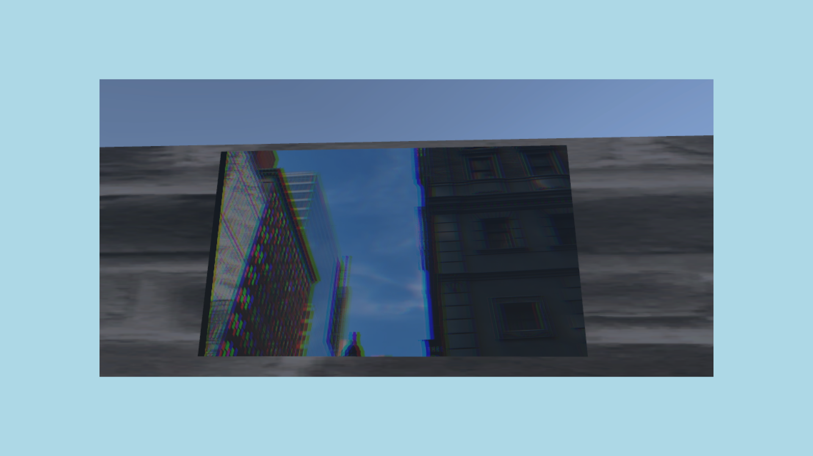
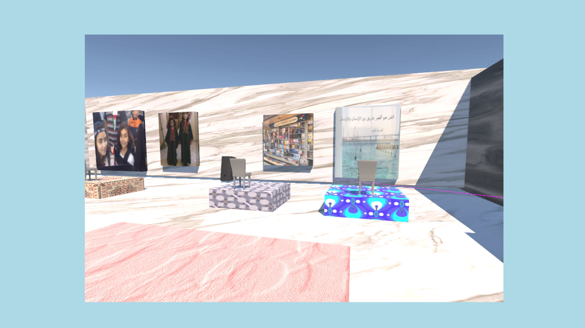
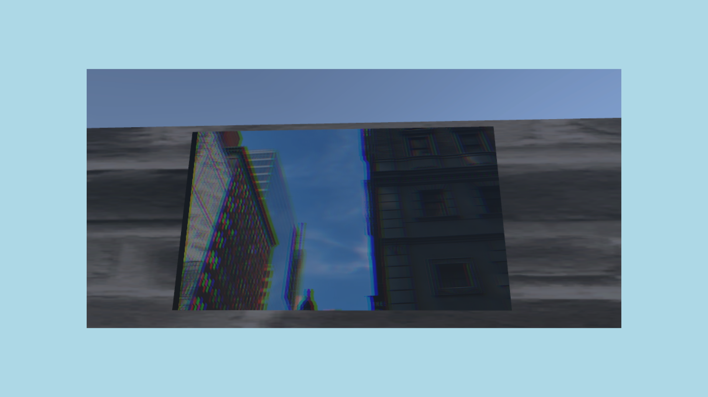

when home won't let you stay
Interactive Experience, Game Design
 



How can game design and interactive environments be used to tell deeply personal stories? When Home Won’t Let You Stay is an interactive Unity experience that transforms spatial storytelling, UX design, and soundscapes into a digital exploration of memory, displacement, and identity. Built as a symbolic “box”, the project mirrors the experience of growing up in the UAE while carrying an ever-present connection to home. Users move through the space, discovering interactive objects—an embroidered rug, family photos, and traditional clothing—each triggering a layered narrative that explores diaspora, memory, and cultural connection. Design Approach & UX/UI Elements This project rethinks interactive environments as emotional and immersive spaces: